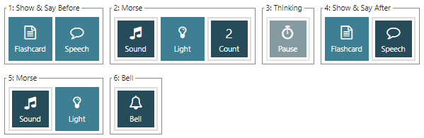

Instructions
There are many keyboard shortcuts which can also access additional functions. Press ? to list them.
To provide for a lot of different learning styles this tool has a lot of flexibility.
- Play buttons: the first block of media controls should be familiar.
- The Play button plays the current message and you can move on to a new message when you are ready with the Next button. Play Next moves on and plays with one click.
- If you have Repeat pressed and then press Play, the current message will be repeated for ever. Repeat with Play Next provides continuous random play.
- The six numbered stages let you choose what you hear and see for each word.
- Show & Say Before: have the word spoken and/or see a flashcard before you hear the Morse. You can choose the (minimum) duration of the flashcard with the "Flashcard time" setting. The flashcard may be displayed for longer if you also have the word spoken.
- Morse: this one is mandatory! Choose to hear or see the Morse (or both). Note: it is only in this part that the timing set in "Morse Sound Controls" has any effect, so for instance if you are playing single characters then the Farnsworth timing has no effect as there is no gap between characters or words in a single messsage. Use Count to choose how many times it plays (1 to 5) or have it repeat until you press the Next button. After the Morse has finished the system pauses for the "Thinking time".
- Thinking: you are able to choose how long you want to think about the Morse you have heard before moving on. You can't turn this on and off with the button, intead configure the delay with the seperate "Thinking time" input.
- Show and Say After: have the word spoken and/or see a flashcard after you hear the Morse. Duration as described above for (1).
- Morse: if you want a reminder (now you know what it is) then use this, choosing sound, light or both.
- Bell: turn the bell on to clearly indicate that the sequence for that word is finshed and you should get ready for the next one.
Discussion
Fundamentally, you should choose whether you want to know in advance what Morse code you are about to hear. If you do not want to know what Morse is about to be played then it's recommended to hide the text or the whole soundboard and use "Shuffle" as otherwise you can start remembering what's coming up next.
If you are head-copying then choose one of the "Show and Say After" options so that you can check your answer. You can adjust the "thinking time" to suit your speed. It's fun to see if you can say what you heard before the computer does!
If you are writing down what you've heard then you can check your answers against the "History" panel and "Clear" it ready for your next session.
You could find a friend to practice with, turn off the repetition, flashcard and speech and just have them tap on the items in the soundboard for you.
With the speech facility you can practice on your phone with headphones or in the car, with no need to look at the screen.
Examples
For example to shuffle the entire list in the style of the Morse Code Ninja resources: ignore (1); set count to 1, 2 or 3 in (2); turn on "Say it" in (4); turn on Morse in (5); and turn on the bell in (6).

To play the list in order indefinitely when you want to know what you are about to hear, try: turning on elements of (1); setting the Count in (2); and consider using the bell in (6).

Timing
As with the other tools on this site, the timing is fully flexible. You can use the "Character speed" and "Farnsworth speed" settings for basic control, but if you want full control then toggle on "Advanced timing". With the advanced controls you could for instance just increase the space between words without increasing the inter-letter spacing (as Farnsworth does) and also adjust the start-up delay which may be used to resolve audio glitches or provide a pause after pressing Play before the Morse begins. Please note though that these timing controls only affect the timing of the Morse within the "2: Morse" section of the sequence. Gaps between sequences are controlled with the "Thinking time" and "Morse gap" times.